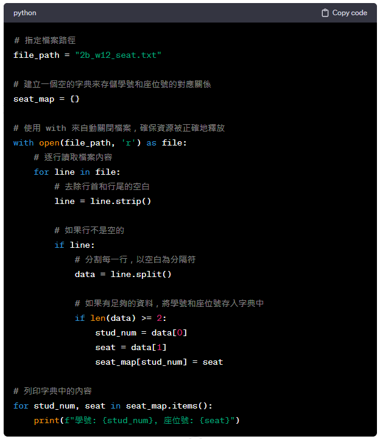
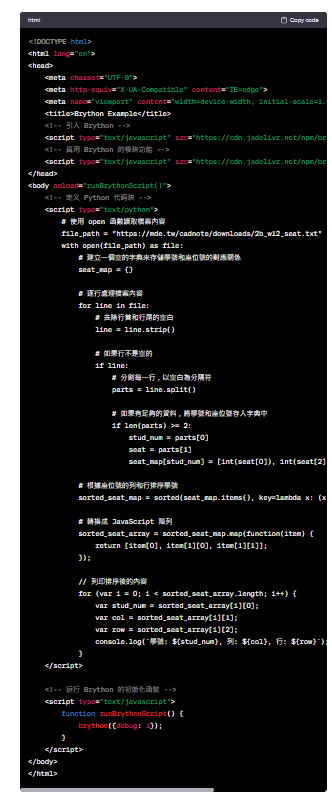

W12 <<
Previous W13
如何用 ChatGPT 協助座位排序的問題並且回覆問題
輸入問題一: 請利用 Python 讀取下列檔案名稱為 2b_w12_seat.txt "2b stud num seat 41123201 41123202 (3,8) 41123203 (3,7) 41123204 (6,8) ~~~ 中間資料沒有列出來 41136124 (3,2) 41136126 41136131 "
ChatGPT回覆一: 如果中間的資料沒有列出來，這可能是因為在逐行讀取時，只處理了特定格式的行，而未處理其他格式。這個版本的程式碼會嘗試處理每一行，只要該行至少包含兩個資料項目（學號和座位號），就會將它們加入字典中。這樣，就可以處理包含座位號的行以及其他格式的行。以下的程式碼會嘗試更靈活地處理各種格式的行：

輸入問題二: 假如前面程式中的座位號第一個 index 代表"列"而第二個 index 代表行, 請延續上個程式, 由左到右作為每一列的順序, 而且希望陣列排序是列出該位置上的學員學號。
ChatGPT回覆二: 如果你希望根據座位號的列和行來排序學號，可以稍微修改程式碼以處理這一需求。這個修改版的程式碼會將座位號的列和行轉換為整數，然後根據列和行的順序進行排序。最後，列印排序後的學號和座位號。以下是修改後的程式碼：

輸入問題三: 假如 "2b_w12_seat.txt" 可以從 "https://mde.tw/cadnote/downloads/2b_w12_seat.txt" 這個網址讀取, 而且希望將上一個 Python 程式改用 Brython 編寫, 要如何修改?
ChatGPT回覆三: Brython（Browser Python）是一個允許在瀏覽器中運行 Python 代碼的工具。要將之前的 Python 程式改用 Brython 編寫，首先確保你的瀏覽器支援 Brython。這個 HTML 文件包含了 Brython 的引入，並使用 <script type="text/python"> 塊嵌入了 Python 代碼。注意，由於使用 fetch 從網路中獲取檔案，因此需要考慮可能的跨域問題。在實際應用中，你可能需要處理跨域問題，例如使用CORS（跨來源資源共享）。此外，請確保在運行 Brython 之前已經載入了所需的 Brython 腳本。在這個例子中，我使用了 jsdelivr CDN 上的 Brython 腳本。為了避免這些問題，我們可以使用 JavaScript 來在瀏覽器中讀取檔案，然後將檔案內容傳遞給 Brython。然後可以使用以下的範例程式碼：
(因為我們不使用 ChatGPT 混用 Javascript 與 Brython 的建立, 所以此地不列出其回覆的原始碼)
輸入問題四: 假如我們已經知道 Brython 可以利用 open(https://mde.tw/cadnote/downloads/2b_w12_seat.txt).read() 或 open(https://mde.tw/cadnote/downloads/2b_w12_seat.txt).readlines() 讀取到檔案, 可以將上一個程式全部改用 Brython 完成嗎?
ChatGPT回覆四: 當使用 Brython 時，由於 JavaScript 的 Array.sort() 方法是就地排序，而 Python 的 sorted() 函數是返回一個新的已排序的列表，為了實現相同的排序行為，我們可以使用 Python 的 sorted() 函數並將結果轉換為 JavaScript 的陣列。這個程式碼使用 sorted() 函數進行排序，然後透過 map() 方法將結果轉換為 JavaScript 的陣列。最後，使用 JavaScript 的迴圈來列印排序後的結果。

但因為以上修改後的程式碼行不通，完整程式碼 w13_chatgpt_brython.py
W12 <<
Previous